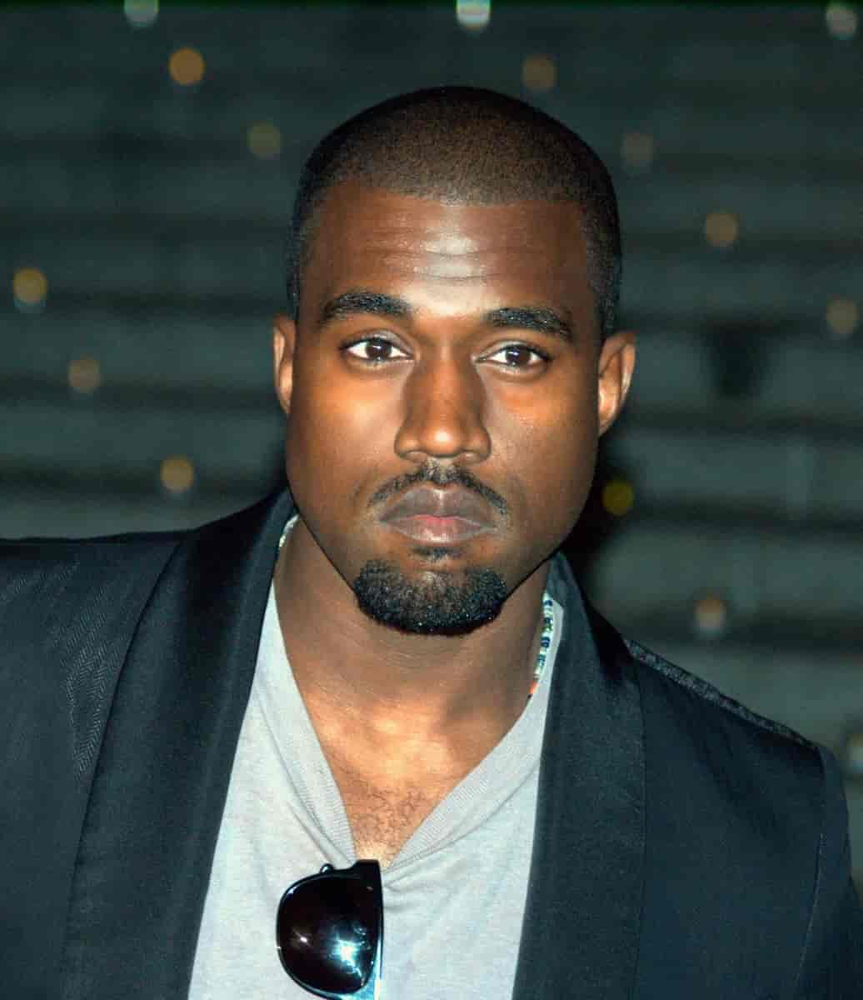

Kanye Omari West, noto anche con lo pseudonimo di Ye è un rapper e produttore
discografico statunitense.
È diventato famoso come produttore utilizzando campioni di brani soul degli anni '60 e '70 in uno
stile che ricordava le voci rave chipmunk di Liam Howlett e altre rese popolari all'inizio degli anni
'90. Sebbene l'atmosfera zuccherina persistesse, il risultato è stato edificante anziché frenetico a
causa dei suoi ritmi hip-hop duri e di un ritmo più lento.
Prima di passare maggiormente alla sintesi e al suono polarizzante di AutoTune nel suo
rivoluzionario album 808s & Heartbreaks, ha utilizzato magistralmente questo metodo durante la
sua prima trilogia di album. Nel suo successivo capolavoro, My Beautiful Dark Twisted Fantasy, è
tornato al campionamento e a fonti più varie, usando di tutto, dalla voce distorta dei King Crimson,
interruzioni di batteria e il proto-rapping di Gil Scott-Heron. Negli album successivi, ha abilmente
incorporato artisti come Nina Simone e Otis Redding, tornando al suo amato soul. È un produttore
con un orecchio incredibile per ricontestualizzare e creare collegamenti tematici tra i testi del
sample e le sue stesse parole, da reiterare.
Insieme a Just Blaze, West è stato un produttore interno della Roc-A-Fella Records nel 2000. Ha
scritto musica per altri artisti della compagnia, tra cui Beanie Sigel e Cam'ron. La sua grande
occasione è arrivata quando ha lavorato a quattro tracce per l'album Blueprint di Jay-The Z nel
2001. Dopo la sua uscita, West è diventato un rapper solista e ha pubblicato il mixtape Get Well
Soon... nel 2002. Il mixtape è servito come lead- in The College Dropout, il suo album di debutto.
L'ispirazione di West per "Through the Wire" è venuta da un incidente automobilistico accaduto nel
2002 nel quale si ruppe la mascella; il brano è apparso inizialmente nel mixtape di West, "Get Well
Soon", che è stato pubblicato nel dicembre 2002.
| Kanye West feat. Big Sean, Pusha T and 2 Chainz Mercy Sample appare a 0:00 |
Super Beagle Dust a Sound Boy Sample appare a 0:00 |
|
| Kanye West feat. Charlie Wilson Bound 2 Sample appare a 0:36 |
Pnderosa Twins Plus One Bound Sample appare a 0:55 |
|
| Kanye West feat. Post Malone and Ty Dolla $ign Fade Sample appare a 0:20 |
Mr. Fingers Mysterey of Love Sample appare a 0:02 |
|